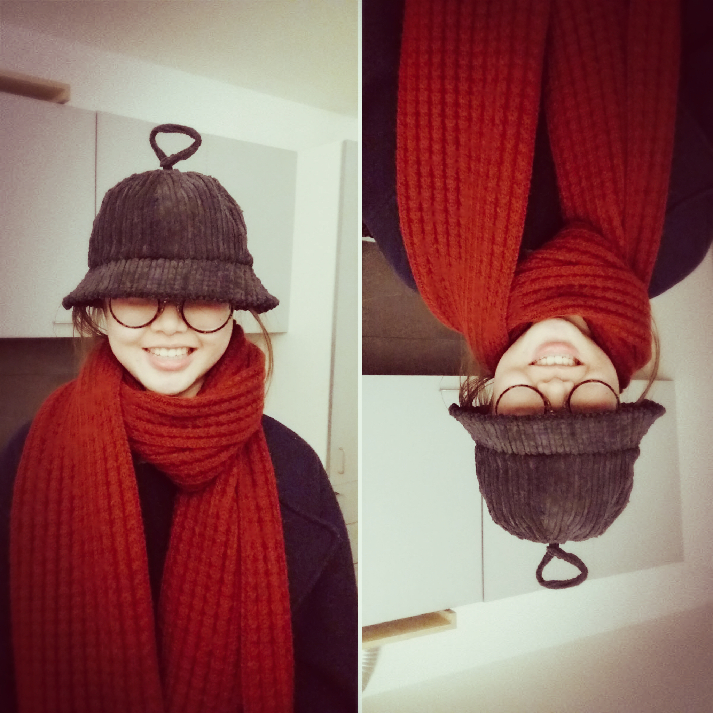

presentazione

mi chiamo chen fangyi,sono cinese.
interessi
mi piace molto l'albero,e ho un sogno di costuire una casa sull'albero.
ho la passione di opera manufatta con la carta ,ora sto cercando il metodo con pelle.preferiscono gatto e cincila
studio
sono all' universita di milano ,studio design degli interni.
invece,nella mia vita prima,io studiavo tutti i corsi di scientifico , nulla di design.
dopo i corsi nel 2017,ho scoperto i professori sono le persone che guidano me la via di design.
non contare su compagno,devo studiare di piu ,non solo seguo le lezioni.il tempo non aspetta a me.
abitudine
preferisco a registare e fare la programma al quaderno(anche se non l'ho sempre fatto).
sono pigra,mi alzo tardi.non sempre esco dalla casa.
se si piace mio presentazione ,segue mio instagram yi_yi_yi0301